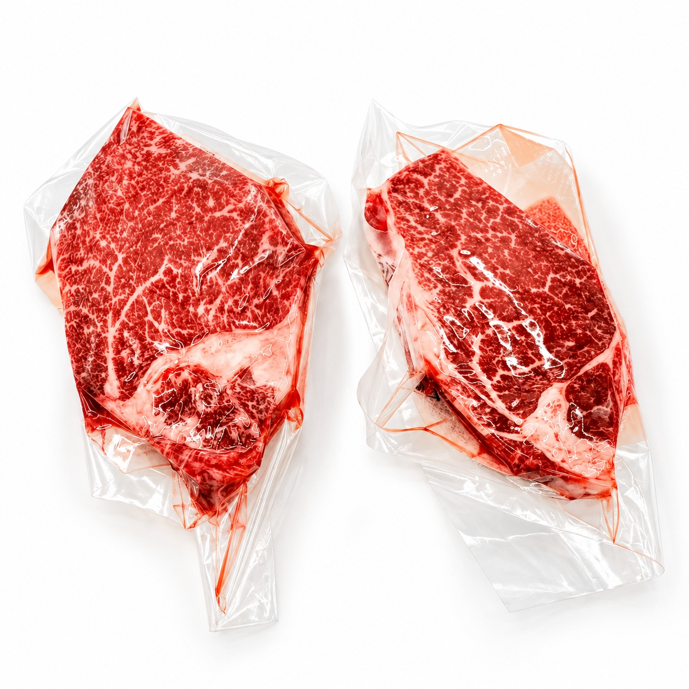
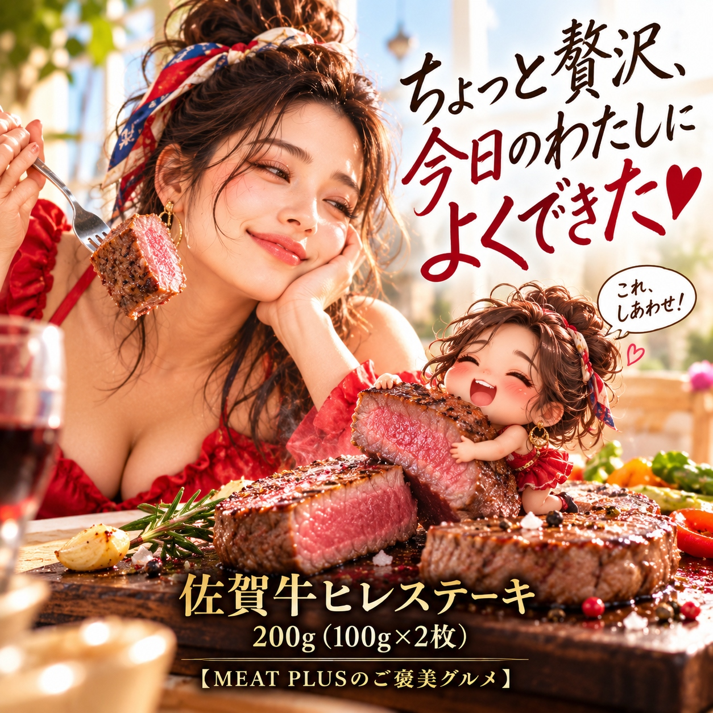
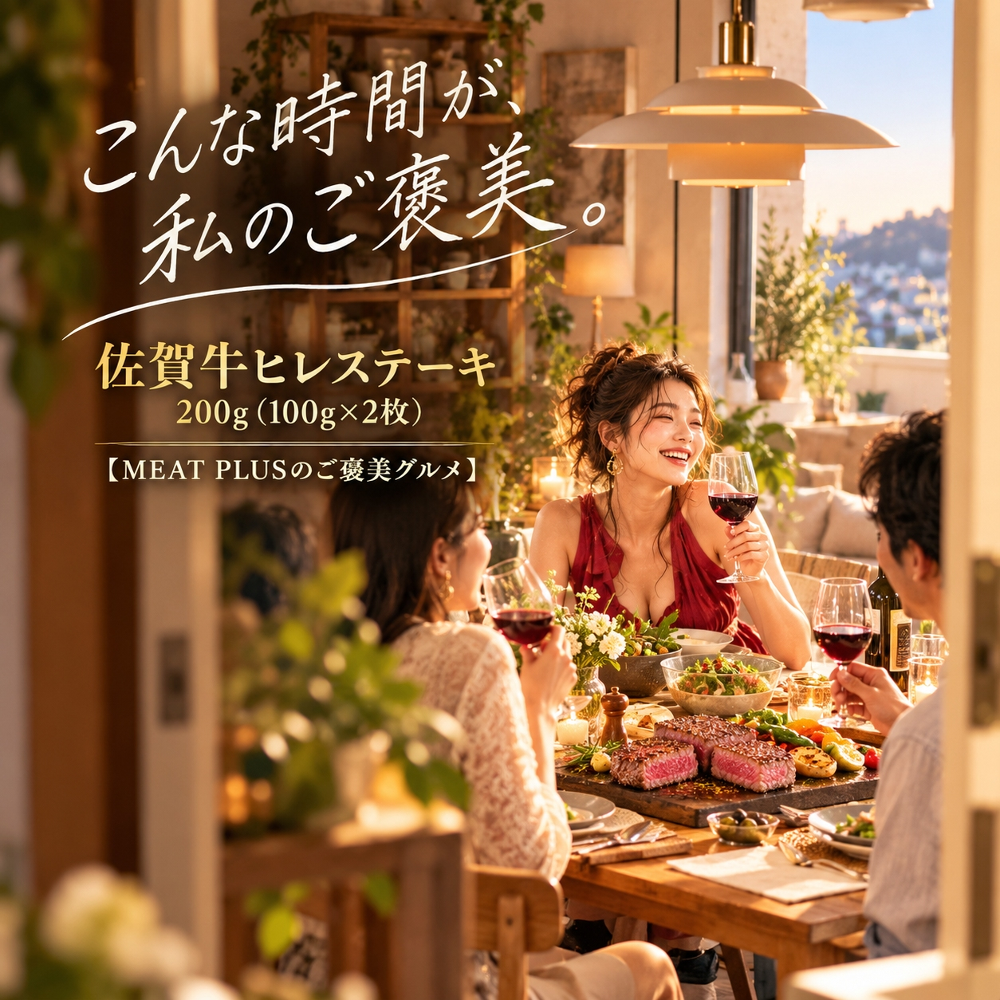

SCENE 01
M011

m 贈り物
佐賀牛ヒレステーキ 200ｇ（100ｇ×2枚）
【至福の柔らかさ。佐賀牛A4・A5等級の極上ヒレステーキ。】
- 内容量200ｇ（100ｇ×2枚）
- 保存冷凍
- 産地日本
商品の特徴を読む
特別な記念日のディナー、あるいは心からの感謝を伝えたい贈り物に、最高級の食体験はいかがでしょうか。日本が誇るブランド牛「佐賀牛」。その中でも選び抜かれたA4～A5等級のヒレ肉は、まさに牛肉の女王と呼ぶにふさわしい逸品です。ヒレは一頭の牛からわずかしか取れない希少な部位。きめ細かく入ったサシと、上品な赤身の旨みが織りなすハーモニーは、口に入れた瞬間にとろけるような至福の食感を生み出します。一枚100gの食べやすいサイズにカットし、一枚ずつ真空パックにしているので、使いやすさも抜群。食べたい分だけ解凍でき、いつでも最高の状態でお召し上がりいただけます。お世話になった方への贈答品、お中元やお歳暮にも最適です。この極上のヒレステーキが、あなたの食卓を忘れられない特別なひとときへと誘います。
公式サイトへ移動します。価格・在庫・配送条件は移動先で最終確認してください。

SCENE 02
きめ細かく入ったサシと、上品な赤身の旨みが織りなすハーモニーは、口に入れた瞬間にとろけるような至福の食感を生み出します。

SCENE 03
特別な記念日のディナー、あるいは心からの感謝を伝えたい贈り物に、最高級の食体験はいかがでしょうか。
PRODUCT INFORMATION
購入前に確認したい商品情報
- 商品名
- 佐賀牛ヒレステーキ 200ｇ（100ｇ×2枚）
- 商品規格
- 200ｇ（100ｇ×2枚）
- 保存方法
- 冷凍
- 原産国
- 日本
- 製造地
- 日本
- 賞味期限
- 発送日より3ヶ月
原材料
牛ヒレ（国内産黒毛和種）
FAQ
購入前のよくあるご質問
美味しい焼き方を教えてください。
お召し上がりになる半日～1日前に冷蔵庫に移して解凍し、焼く30分ほど前に常温に戻してください。熱したフライパンに牛脂か油をひき、強火で両面に焼き色をつけます。その後、火を弱めてお好みの焼き加減に仕上げるのがおすすめです。塩胡椒だけでも肉本来の旨みを存分にお楽しみいただけます。
贈り物にしたいのですが、のしやギフト対応は可能ですか？
はい、可能です。ご注文時にギフト設定から「のし」の種類をお選びいただけるようになっております。大切な方への贈り物として、心を込めてご用意させていただきますので、ご安心ください。
MEAT PLUS OFFICIAL SHOP
【至福の柔らかさ。佐賀牛A4・A5等級の極上ヒレステーキ。】
仕入れ・加工・梱包・発送まで自社で行うMEAT PLUSの公式オンラインショップでご注文いただけます。
公式オンラインショップで購入する